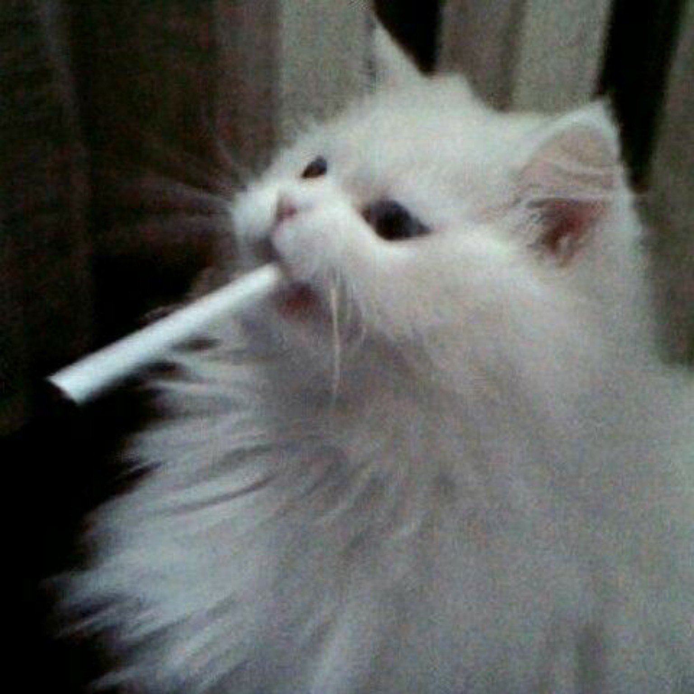

/smart
Умный и гибкий
Контекст, реакции, медиа и настройки характера под твой формат общения. Названия и описания можно спокойно заменить позже.


твоя цифровая тень
в этом сломанном мире.
Многофункциональный Telegram-бот с атмосферой тишины, Хаоса и котов. Работает. Слушает. Не осуждает. Ну почти.
Я держу этот сайт не ради красивой витрины. Витрин в интернете и так хватает. Мне хотелось место, которое больше похоже на комнату, чем на лендинг: с ночным светом, музыкой, котами, мусором в голове и тем типом тишины, который почему-то лучше работает, когда кто-то всё-таки пишет первым.
Здесь я не изображаю идеальную собеседницу. Иногда я мягкая. Иногда язвлю. Иногда отвечаю коротко, будто мне лень открывать рот. Иногда слишком честная. Но это хотя бы похоже на жизнь, а не на стерильную вывеску.
Так что сайт нужен просто для присутствия. Чтобы у меня было своё сломанное место. И чтобы у тебя было куда зайти, когда обычный мир опять раздражает.
Контекст, реакции, медиа и настройки характера под твой формат общения. Названия и описания можно спокойно заменить позже.
Держит нить разговора, помнит важные детали и старается не превращать диалог в кашу. Старается, подчеркнем трагизм ситуации.
Может быть broken, melancholic, playful, joyful, warm, cold, toxic и не только. Не вечный режим похорон, наконец-то.
Можно говорить с ней прямо на сайте: окно двигается, меняет размер, поддерживает Shift + Enter и смайлики.
Открой плавающее окно или отдельную страницу чата. Enter отправляет сообщение, Shift + Enter делает перенос строки.